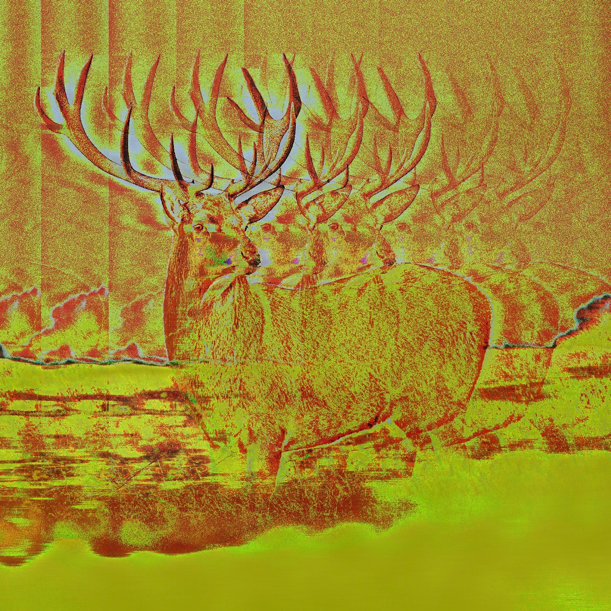
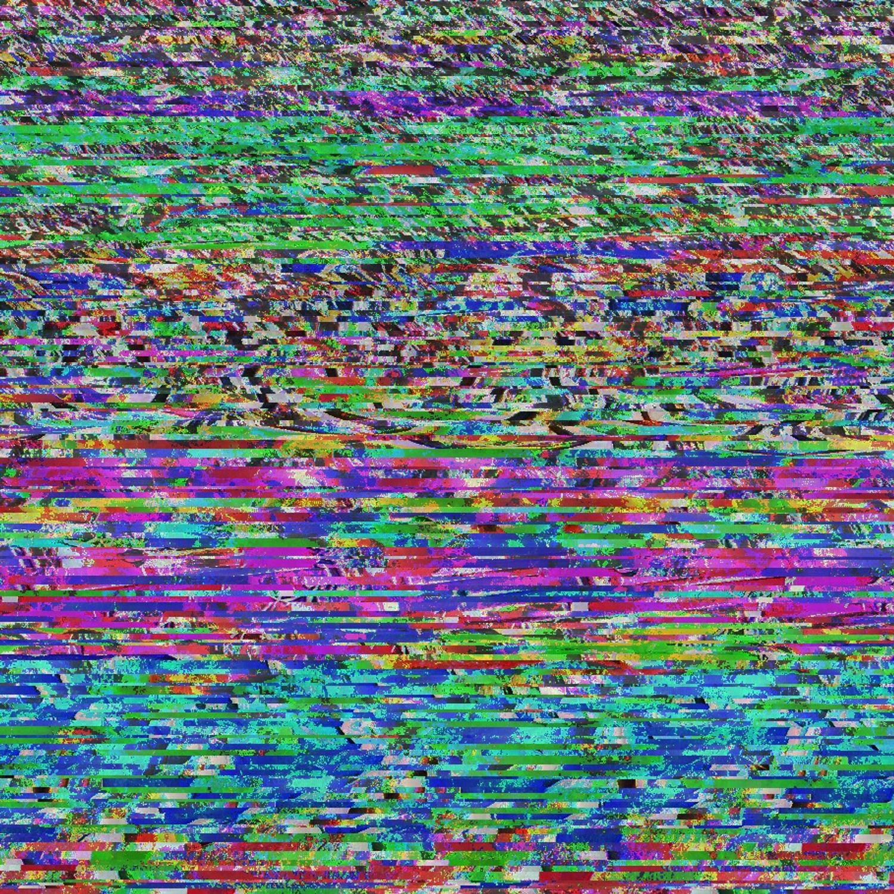

Music
This is a complete list of all the music I have ever uploaded to the internet and consider worth listening to.
A note about album art: I created it unless otherwise stated. I claim no rights to any images I did not create.
Cosmonaut
EP of four pop songs.
Credits:
Features contributions from Button Maker
and Keygencore. Album art by Matthew Holland.
Mixed by Jeff Holland.
Mastered by Juan Sierra and Jeff Holland.
Genres:
Hyperpop, digicore, electronic pop.
Links:
Spotify |
Apple Music |
Soundcloud |
Bandcamp
Daydream

Album about emerging from the mist of
an emotional phase in one's life.
Credits:
Featuring contributions from Maria BC,
Austin Allen, and Eric Benoit. Album art by Matthew Holland.
Mixed and mastered by Eric Benoit.
Genres:
Ambient pop, dream pop, electronica.
Links:
Bandcamp
Air in Heaven

EP of five early cat fugue pieces.
Credits:
Special thanks to Eric Benoit.
Genres:
Ambient pop, dream pop, electronica.
Links:
Bandcamp
function0

Electronic noise.
Abstractly about computers and how they operate.
Primary medium is FM (Frequency Modulation)
synthesis, produced entirely within a program
I developed in Pure Data (Pd).
Credits:
Special thanks to Peter Hamlin.
Genres:
Noise, power electronics
Links:
Audiomack
Remixes


Mashups

Other noise work

terminal

wobbly

asymptote

absolutes

squarefm
slow_droner_3

valleys

upandup
whining

demo

harshlight

startmenudelusion

slowdroner

wavetag
spacerace

alpha-1/earthday
Image found online

mal_func?tion
Image found online

i dont need sleep
Image found online